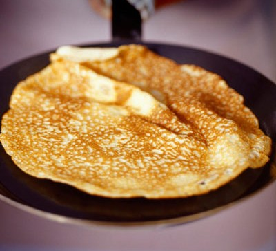

Pancake Recipe

Description
Pancakes! Are very easy to make, good for you, can be topped with anything from fruit to ice cream to sauces, and they can be made in no time!
Ingredients:
- 100g Plain Flour
- 2 Large Eggs
- 300ml Milk
- 1 tbsp sunflower oil, plus extra for frying
Steps:
- Put 100g plain flour, 2 large eggs,
300ml milk, 1 tbsp sunflower or vegetable oil and a
pinch of salt into a bowl or large jug, then whisk to a
smooth batter.
- Set aside for 30 mins to rest if you have time, or start cooking straight away.
- Set a medium frying pan or crêpe pan over a medium heat and carefully wipe it with some oiled kitchen paper.
- When hot, cook your pancakes for 1 min on each side until golden, keeping them warm in a low oven as you go.
- Serve with lemon wedges and caster sugar, or your favourite filling. Once cold, you can layer the pancakes between baking parchment, then wrap in cling film and freeze for up to 2 months.